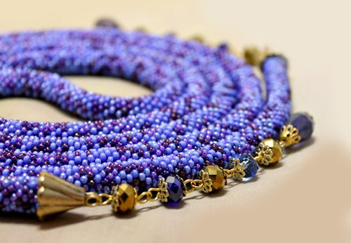
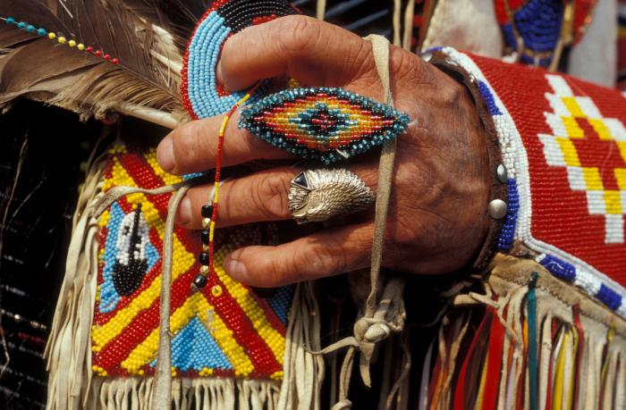
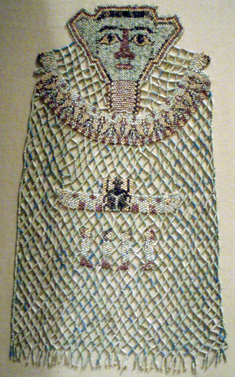
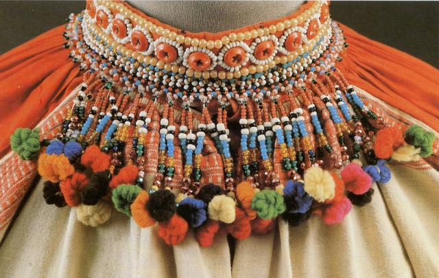
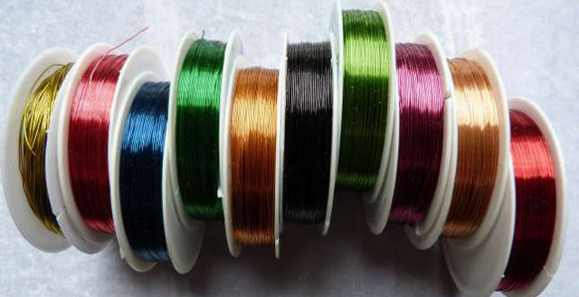

Про бісероплетіння
Бісероплетіння – різновид декоративно-ужиткового мистецтва з використанням перлів — природного чи штучного походження. Має тисячолітню історію. Використовувалося майстрами у Стародавньому Єгипті, в Південній Америці, Південій Африці, Індії.
Бісероплетіння належить до числа найбільш захоплюючих народних мистецтв, яке має багатовікову історію існування. З бісеру плетуть всілякі прикраси, аксесуари, ним прикрашають одяг і вишивають картини.
За допомогою прикрас люди висловлювали свою думку. Особливою популярністю подібні погляди користувалися у корінних американців. Історія виникнення бісероплетіння нерозривно пов’язана з індіанцями, які використовували намистини для прикраси будинків, вплітали стрічки з них в волосся, вишивали ними одяг. Без цього елементу фурнітури не обходився декор жодної налобной пов’язки, ритуального пояса, дитячої колиски або табакерки.
Бісероплетіння виникло давно, його історія налічує майже 6 тис. років. Вперше виникло це мистецтво ще в Давньому Єгипті, а матеріал, який використовувася у процесі такої творчої діяльності, називався «бусра», у перекладі з арабської мови цей термін означає «фальшиві перли».
Спочатку плетіння бісером було досить складним заняттям: необхідно було витягнути нитку із скломаси і обвити нею мідний стрижень. Після цього стрижень виймали, а кожну намистину потрібно ще було обробити вручну.
В той час намистини були простими, безбарвними і непрозорими, і лише згодом, коли вже техніка виготовлення матеріалу для творчості вдосконалилася, люди змогли зробити намистини напівпрозорими, прозорими і кольоровими.
Історія бісероплетіння також пов’язана і з Давнім Римом, там бісер отримували методом видування скла з металевої трубки. З Римської Імперії це захоплююче заняття поширилося на територію Італії, Іспанії, Греції, Франції, Німеччини та Венеції.
Саме Венеція, починаючи з XIII століття, стає столицею виготовлення намистин для бісероплетіння, адже тут у той час було добре розвинене скляна майстерність. Незабаром конкуренцію Венеції склала Чехія, тоді відома як Богемія, де виробляли скло високої якості і чистоти.
Завдяки такому досягненню скляної майстерності в Чехії з скла і кришталя стали виробляти кольоровий богемський бісер і стеклярус.
Технологія виготовлення матеріалу охоронялася настільки ретельно, що до 1704 року не було жодної книги, в якій описувалися секрети цієї майстерності. Книга, яку тільки зараз побачив весь світ, нині зберігається в музеї Великобританії.
На початку XIX століття були винайдені машини, призначені для виробництва матеріалу, але, на жаль, таке нововведення не тільки знизило вартість намистин, але це вплинуло і на їх якість.
В Стародавній Русі також високо цінували склоробство, німецький і венеціанський бісер, але самі слов’яни активно почали займатися цією діяльністю після XVI століття. За часів правління Петра I в Росію були запрошені знамениті майстри-склярі з інших держав.
Крім того, молоді люди їздили в Італію з метою навчання правилам створення матеріалу для творчості і основам бісероплетіння.
З цього часу стрімко збільшився асортимент різноманітних бісерних виробів, такими декоративними елементами прикрашали не тільки предмети гардеробу, але також ікони і оббивку для меблів. Виготовлялися картини, панно, різні прикраси, аксесуари – сумочки, закладки для книг, чохли для парасольок, різноманітні предмети побуту.
Базові техніки бісероплетіння
Освоїти основи цього виду творчості не так складно, адже існують різноманітні методики, де представлено бісероплетіння для початківців, супроводжуване фото і відео. В даний час рукодільницями розроблено безліч методик, прийомів і способів бісероплетіння.
Нерідко досвідчені майстри в процесі виготовлення бісерних виробів в застосовувану методику вносять свої індивідуальні елементи. Часто застосовуються такі техніки плетіння:
Мозаїчна техніка;
Голчате плетіння;
Французька техніка;
“Петелька на дроті”;
“Дротовий джгут”;
“Тимчасове закріплення дроту”.
Багато майстринь при створенні прикрас і аксесуарів використовують мозаїчну техніку плетіння, яка ще має безліч різновидів. Наприклад, з непарною або парною кількістю намистин, подвійна і потрійна методика, кругове або цилиндричне плетіння.
Ця техніка дозволяє отримувати ідеально рівну бісерну поверхню, яку можна використовувати в якості основи для створення практично будь-яких виробів. Готова річ нагадує собою стіну з маленьких цеглинок. При виборі цієї мозаїчної техніки плетіння можна використовувати рубаний і круглий бісер, стеклярус.
Голчате плетіння передбачає використання нитки, кінці якої вставляються в дві голки. Потім кінці нитки зводяться так, щоб у підсумку вони пройшли через бісер і вийшли в протилежному одна до одної напрямку.
Замість нитки волосіни – традиційних елементів, необхідних при створенні з бісеру дивовижних предметів мистецтва, може використовуватися і дріт. При таких техніках, як “Петелька на дроті” або “Дротовий джгут”, знадобиться дріт для бісероплетіння.
Використовується такий метод переважно для створення оригінальних композицій, які так популярні при оформленні інтер’єру. Цей спосіб також дозволяє створювати красиві іграшки для дітей.
Дріт використовується і при виборі французької техніки бісероплетіння, коли матеріал нанизується на неї по колу. Щоб не втратити бісеріни, на одному кінці дроту роблять петельку, а на інший кінець нанизують потрібну кількість матеріалу, яка зазначена у схемі.
Французька техніка відома ще, як дугове плетіння, оскільки для створення деталей дріт необхідно згинати в потрібному напрямку. Як правило, використовується для створення квітів і листя, які є складовими компонентами квіткових композицій, такі елементи виглядають об’ємними і ажурними.
Французьке бісероплетіння є одним з найбільш складних способів плетіння з допомогою дроту. Важливо, щоб намистини і бісер розташовувалися щільно один до одного, вони не повинні переміщатися по дроту, адже виріб буде неакуратним і некрасивим.
Жінкам, які вміють і люблять в’язати гачком або спицями, сподобається в’язання з бісером. У в’язаних виробах такі декоративні елементи стають частиною полотна, надаючи одягу оригінальності і святковості.
Бісером можна і вишивати, нанизуючи його на нитку. У вишивці він чудово поєднується з іншими матеріалами – намистинами, стразами, блискітками, тасьмою та кольоровими нитками.
Займаючись таким видом рукоділля, можна приємно провести час і створити оригінальні вироби для себе або своїх близьких!